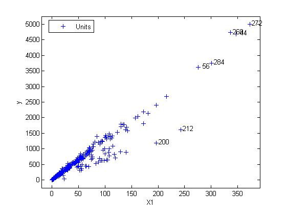

Brushing the yXplot
These pages demonstrate how to use the information provided by yXplot in combination with other plots of the FSDA toolbox and other MATLAB objects such as uitables. The information is extracted by brushing points in the yXplot and linking them to different objects of other plots. To show the concept we use the fishery data, which is characterised by a rather complex structure affected by outliers and formed by a mixture of overlapping populations. We start loading the dataload fishery;
Let's extract X (quantity) and y (value)
y = fishery.value; X = fishery.quantity
They refer to the Value (in thousands of Euros) and the Quantity (in tons) of monthly flows of a fishery product imported in the Member States of the European Union (variable Destination) from a third country (variable Origin).
We run the forward search on these variables.
[out]=LXS(y,X,'nsamp',1000); [out]=FSReda(y,X,out.bs);
and we plot, with all the default options, the value of the import flows against the corresponding quantities:
yXplot(out);

yXplot(out,'selunit',[200 212 56 284 260 44 272]);

To get more insights on the anomalous units we use the databrush option with the persist modality.
yXplot(out,'selunit',[200 212 56 284 260 44 272],'databrush',{'persist','on','selectionmode' 'lasso'});
We persist brushing the plot until we select the three groups in the figure:

Each brushing action updates the resfwdplot, which monitors the residuals of the units selected in the yXplot during the forward search. The resfwdplot is created automatically after the first selection.

As one might expect, the brushed units 200 and 212 have the most deviating absolute residuals. Besides, also the units 284, 260, 44, 56 and 272 have scaled residuals that jump to high values at the end of the search.
Now, we would like to check what actually are the units in the selections made, in particular those in the third selection (cyan units).
At each selection, the brushed units and their steps of entry were displayed
in the MATLAB command window. The selection for the most populated group gave
rise to the following steps (first column) and units (second column).
647 181 NaN NaN NaN NaN NaN NaN NaN NaN NaN 648 184 NaN NaN NaN NaN NaN NaN NaN NaN NaN 651 201 NaN NaN NaN NaN NaN NaN NaN NaN NaN 652 211 NaN NaN NaN NaN NaN NaN NaN NaN NaN 653 188 NaN NaN NaN NaN NaN NaN NaN NaN NaN 654 198 NaN NaN NaN NaN NaN NaN NaN NaN NaN 655 183 NaN NaN NaN NaN NaN NaN NaN NaN NaN 656 213 NaN NaN NaN NaN NaN NaN NaN NaN NaN 657 214 NaN NaN NaN NaN NaN NaN NaN NaN NaN 659 193 NaN NaN NaN NaN NaN NaN NaN NaN NaN 660 202 NaN NaN NaN NaN NaN NaN NaN NaN NaN 661 196 NaN NaN NaN NaN NaN NaN NaN NaN NaN 662 197 NaN NaN NaN NaN NaN NaN NaN NaN NaN 663 210 NaN NaN NaN NaN NaN NaN NaN NaN NaN 664 216 NaN NaN NaN NaN NaN NaN NaN NaN NaN 665 203 NaN NaN NaN NaN NaN NaN NaN NaN NaN 666 209 NaN NaN NaN NaN NaN NaN NaN NaN NaN 668 194 NaN NaN NaN NaN NaN NaN NaN NaN NaN 669 215 NaN NaN NaN NaN NaN NaN NaN NaN NaN 670 204 NaN NaN NaN NaN NaN NaN NaN NaN NaN 671 208 NaN NaN NaN NaN NaN NaN NaN NaN NaN 672 205 NaN NaN NaN NaN NaN NaN NaN NaN NaN 673 195 NaN NaN NaN NaN NaN NaN NaN NaN NaN 674 206 NaN NaN NaN NaN NaN NaN NaN NaN NaN 675 207 NaN NaN NaN NaN NaN NaN NaN NaN NaN
The units are all between rows 181 and 216. These units refer to
the same Member State of destination, namely MS7, which can be thus considered an
homogeneous sub-population of the dataset. ,'Position', [0.02 0.02 0.9 0.9],'Data', fisheryC,'ColumnName', colnames,'ColumnFormat', colfmt)
The table shows that the brushed units, which correspond to lines from 181 to 216, refer all to the same country of destination. This confirms that this sub-group is an homogeneous population that should be distinguished from the rest of the data.